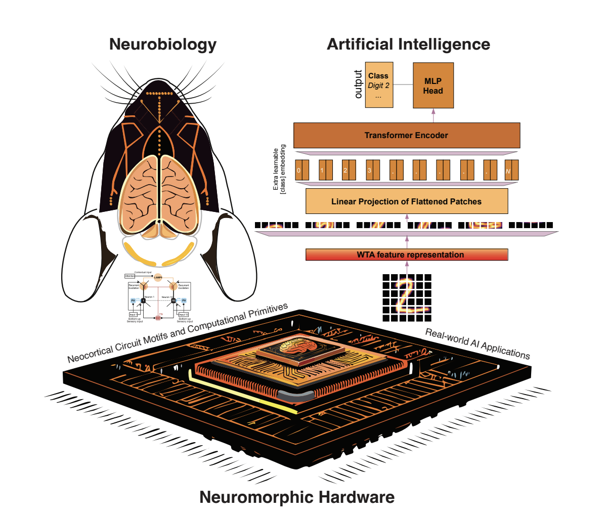
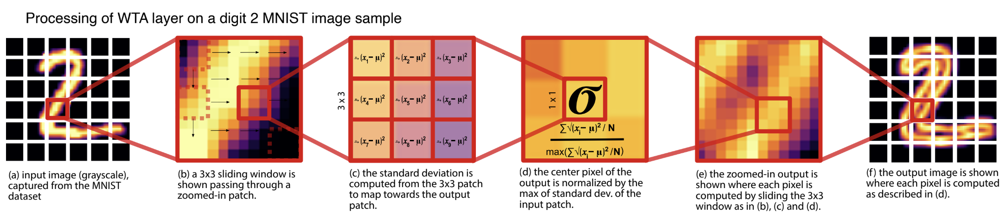
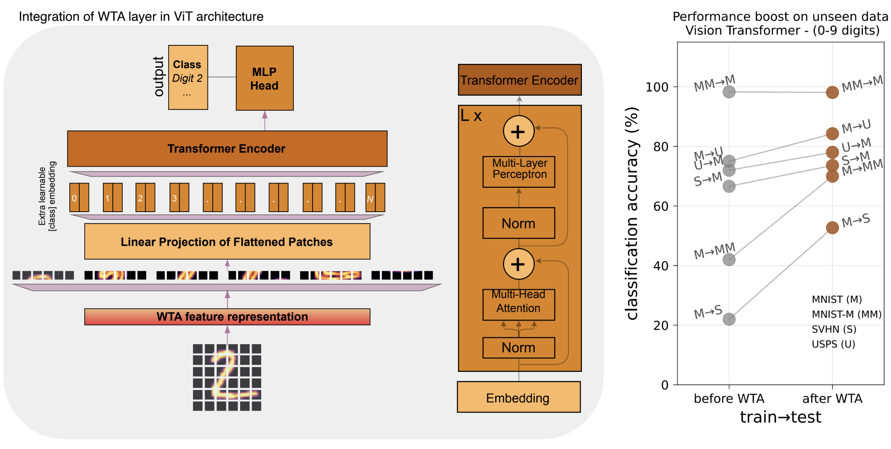
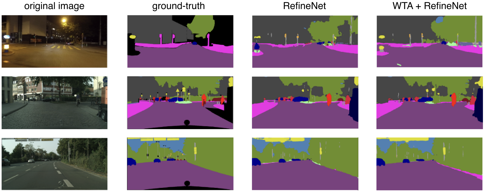

See how our brain-inspired AI technology works and learn about the science behind Soft Winner-Take-All networks.
We explore how brain-inspired circuit motifs, particularly soft winner-take-all (sWTA) computations mediated by key interneurons, can be translated into neuromorphic hardware and deep learning models. By mapping these biologically grounded dynamics onto IBM’s TrueNorth chip and integrating them into Vision Transformers, we demonstrate enhanced working memory, stronger generalization, and a pathway toward more human-like intelligence in AI systems.
In winner-take-all systems, the most active neurons dominate by silencing weaker ones. This biological principle ensures that only the strongest signals drive decisions. Inspired by nature, similar mechanisms power efficient computations in silicon circuits.

Our model mimics neocortical circuits, capturing how excitatory and inhibitory neurons interact. It draws on real measurements from the visual cortex to stay biologically grounded. The result is a soft winner-take-all system, where strong signals rise and weaker ones fade.
A sliding window-based computation was employed to amplify key features while reducing domain shifts, resulting in a clearer and more normalized output representation.

We tested whether adding a pre-processing winner-take-all (WTA) layer to deep learning models, such as Vision Transformers (ViTs), could improve performance on real-world vision tasks. Training on a single source domain and testing on unseen target domains showed consistent accuracy gains. Similar improvements were observed in EfficientNet, CapsuleNet, MobileNet, and ResNet, where the WTA layer enhanced feature generalization and robustness to domain shifts across digit recognition datasets.

AI that understands images across styles, formats, and distortions. One unified approach that works with diverse visual representations.
MNIST
MNIST-M
USPS
SVHN

sWTA improves feature alignment by highlighting key features and filtering noise, boosting domain generalization. When added to RefineNet, it handled nighttime driving nearly as well as models trained on night images showing how brain inspired filtering sharpens perception across domains.
With SST held constant, increasing PV inhibition acts like a neural brake that lowers pyramidal responses, suppresses near winners, and sharpens the soft winner take all outcome by preserving the strongest input while silencing weaker competitors. PV chiefly shifts the response offset and enforces competition, whereas SST mainly adjusts the slope and width of tuning to shape gain.
We replicated a core cortical computation on neuromorphic hardware and used it to improve established machine learning models. Using IBM TrueNorth, which was designed to mimic brain organization, we implemented soft winner take all dynamics as a preprocessing layer that enhanced robustness and accuracy across tasks.
The state pool uses soft winner take all dynamics to keep one state, such as S1 or S2, active at a time through balanced excitation and inhibition. The pointer pool, linked by cross-inhibitory interactions, manages transitions between states, allowing the system to preserve memory while flexibly switching based on inputs.
First computationally efficient system that truly mimics brain circuits unlocking working memory, decision making, and biological learning.Computer vision to medical imaging to autonomous vehicles.We're making AI fundamentally more brain-like.
The future: biological intelligence on silicon.
Read our Paper